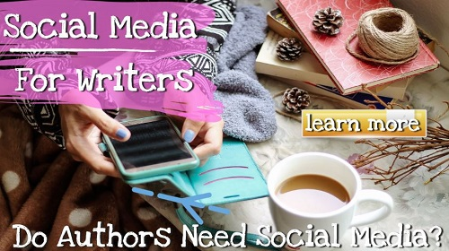

Using Social Sharing To Sell Your Books
Posted on 29-06-2021 02:27 PM

Is author social networking something I should be aware of as a writer? Of course, the short answer is yes. You should be present anywhere you can sell your book or brand. There are many more rivals than Facebook, Twitter, Instagram, and Pinterest.
If you are a writer or author, you should be aware of the importance of social media. There are so many social networks for authors that newcomers are often perplexed as to which one to utilize first. You must understand which social networks are ideal to begin with and which to add when the chance arises. It is important that you cultivate your personal brand.
The author's social media advantage.
You must learn how to use social media for authors if you want to be a successful author nowadays. Marketing is something that all writers, whether self-publishing or working with a traditional publisher, must grasp. That's all! Traditional publishers, too, look at your social networks while deciding whether or not to acquire your book.
You don't have to be on social media every day to post on a regular basis. If you feel that your social media time is taking away from your writing time, consider social media platforms that allow you to plan your posts ahead of time.
Social media managers are employed in nearly every industry, from entertainment to food to education. These people are in charge of creating and maintaining the company's or industry's online presence, as well as reaching out to customers and promoting the institution's brand. Tasks include maintaining a blog, replying to emails, monitoring and updating a website, and administering social media platforms.
Increase your writer's social media presence.
Increase the visibility of your brand on the Internet. Social media is becoming a must-have tool for authors. There are several social networks available, including wordpress, tumblr, facebook, twitter, youtube, and pinterest.
The author's point of view on social networking
Now that you have a general knowledge of how authors utilize social media, evaluate which site is best for authors. Different platforms are created for each author based on their personality, the sort of books they publish, and the people they wish to target. The most essential thing is to meet your audience where they are.

The Author's Guide to Social Networks
Creating content for social media, on the other hand, is not always a simple task. While your organization establishes the tone, voice, and topic matter for each post, it is your responsibility to adhere to the best practices and guidelines of each social media site. What works well on one platform may not work well on another.
That is why freelance copywriters should understand everything from Twitter's character restriction to the best approach to use hashtags on Instagram. You'll want to know:
- Each popular social networking platform's character restriction.
- How to use various types of media and content on social networks.
- How to utilize hashtags successfully in your social media content.
What happens now that you've published a book?
Instagram is excellent for engaging with your target audience. Many Instagram authors provide fascinating and entertaining content in the form of photographs and storytelling. Simple statements and inventive images of their labor are only a portion of what they have to offer. Many Instagram authors share stunning photographs of their thoughts with their followers to offer them a look into the writing process. For example, if you've written a poem about an old tree, a photo of the living oak that inspired you would be excellent.
Ads on Facebook for authors
People are becoming tired with Facebook's apparently ever-changing look. In truth, unless you pay for Facebook advertisements, the network is becoming extinct as a means of self-promotion.
Instagram is still relatively young in comparison to other social networks such as Facebook and Twitter, which many think have reached saturation. Today, Facebook is clogged with advertisements and other postings, making it nearly hard to gain excellent visibility for your page's updates.
Goodreads is a natural choice for authors seeking for the ideal social media site to market their work because everyone linked to the network is a book lover in some manner.
Writers' Must-Have Social Media Tips
Many internet tools can be found through social media; they may help you promote your work, build a support system, and even edit and publish your writing.
Before you join one of these writers' social networks (or any of the many others available), you should understand why you're doing it. These sites are not intended to help you sell your work and generate money; rather, they are intended to help you connect with other authors, engage with fans, and learn more about writing.